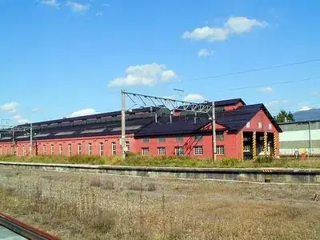
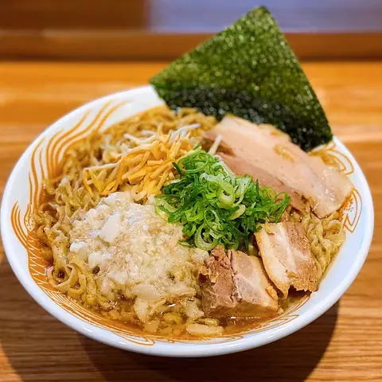
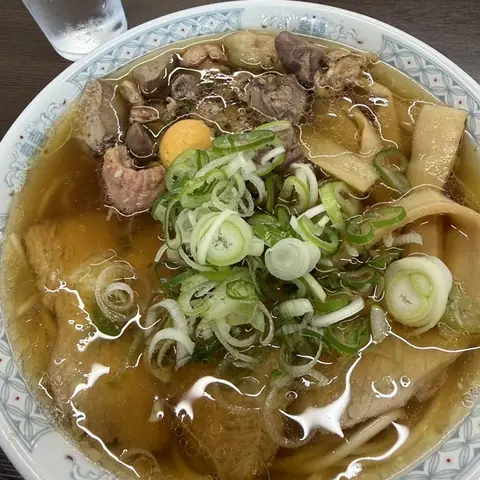
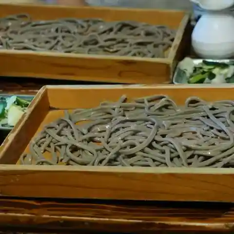
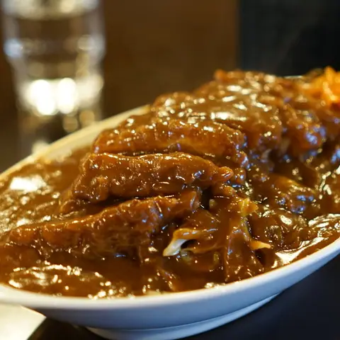
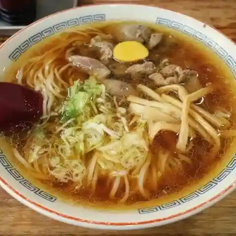
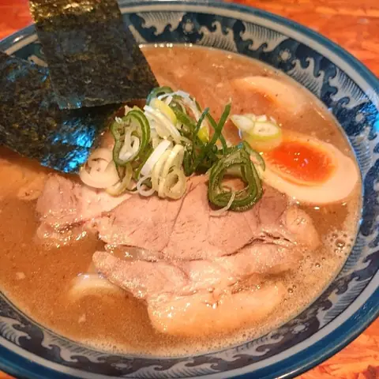
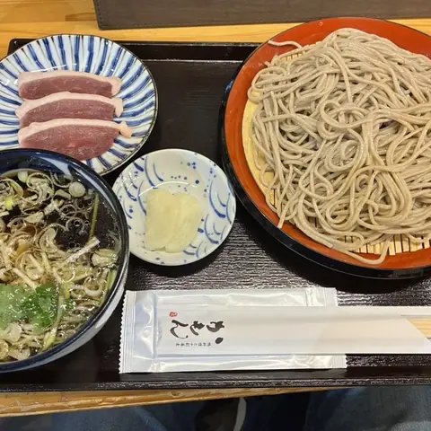

Shinjo
Shinjo · Yamagata
Shinjo
Highlighted on the Yamagata map.

Stay
ホテルルートイン新庄駅前
Hoteruruutoin Shinjou Ekimae
Hotel in Shinjo, Yamagata.
ニューグランドホテル
Nyuugurandohoteru
Hotel in Shinjo, Yamagata.
Dining
新旬屋 本店

Shin Jun Ya Honten
Ramen shop in Shinjo, Yamagata.
中華そば 末広

Chuuka Soba Suehiro
Ramen shop in Shinjo, Yamagata.
手打ちそば さぶん

Teuchi Chisoba Sabun
Soba restaurant in Shinjo, Yamagata.
エンジェルズ

Enjieruzu
Coffee shop in Shinjo, Yamagata.
一茶庵 支店

Issa Iori Shiten
Ramen shop in Shinjo, Yamagata.
麺武者

Men Musha
Ramen shop in Shinjo, Yamagata.
十割蕎麦と鴨料理 かもん 新庄駅本店

Juu Wari Soba To Kamo Ryouri Kamon Shinjou Eki Honten
Soba restaurant in Shinjo, Yamagata.
そば処 あさ沼
Soba Tokoro Asa Numa
Soba restaurant in Shinjo, Yamagata.
手打ち・つけ汁 うどん処 てる井
Teuchi Chi Tsuke Shiru Udon Tokoro Teru I
Udon restaurant in Shinjo, Yamagata.
梅屋
Umeya
Ramen shop in Shinjo, Yamagata.
そば処えびす
Soba Tokoro Ebisu
Soba restaurant in Shinjo, Yamagata.
TRATTORIA NONNO
Trattoria Nonno
Pasta restaurant in Shinjo, Yamagata.
今田商店
Imada Shouten
Ramen shop in Shinjo, Yamagata.
ケンちゃんラーメン 新庄店
Ken Chan Raamen Shinjou Mise
Ramen shop in Shinjo, Yamagata.
三浦焼ソバ店
Miura Yaki Soba Mise
Yakisoba shop in Shinjo, Yamagata.
さらしな
Sarashina
Soba restaurant in Shinjo, Yamagata.
もがみ物産館
Mogami Bussan Kan
Gelato and ice-cream shop in Shinjo, Yamagata.
一葉 本店
Ichiyou Honten
Japanese restaurant in Shinjo, Yamagata.
びっくりうどん
Bikkuriudon
Udon restaurant in Shinjo, Yamagata.
煮干中華蕎麦 あらた
Niboshi Chuuka Soba Arata
Ramen shop in Shinjo, Yamagata.
おでんと日本酒 はとり
Odento Nihonshu Hatori
Izakaya in Shinjo, Yamagata.
げたぱん
Getapan
Bakery in Shinjo, Yamagata.
お食事処 八角
O Shokuji Tokoro Hakkaku
Japanese restaurant in Shinjo, Yamagata.
香港飯店
Honkon Hanten
Chinese restaurant in Shinjo, Yamagata.
Sights
Higashiyama Park Hydrangea Forest
Hydrangea is enacted in the flowers of Shinjo City as a symbol of the character of the snow country people with its powerful vitality.